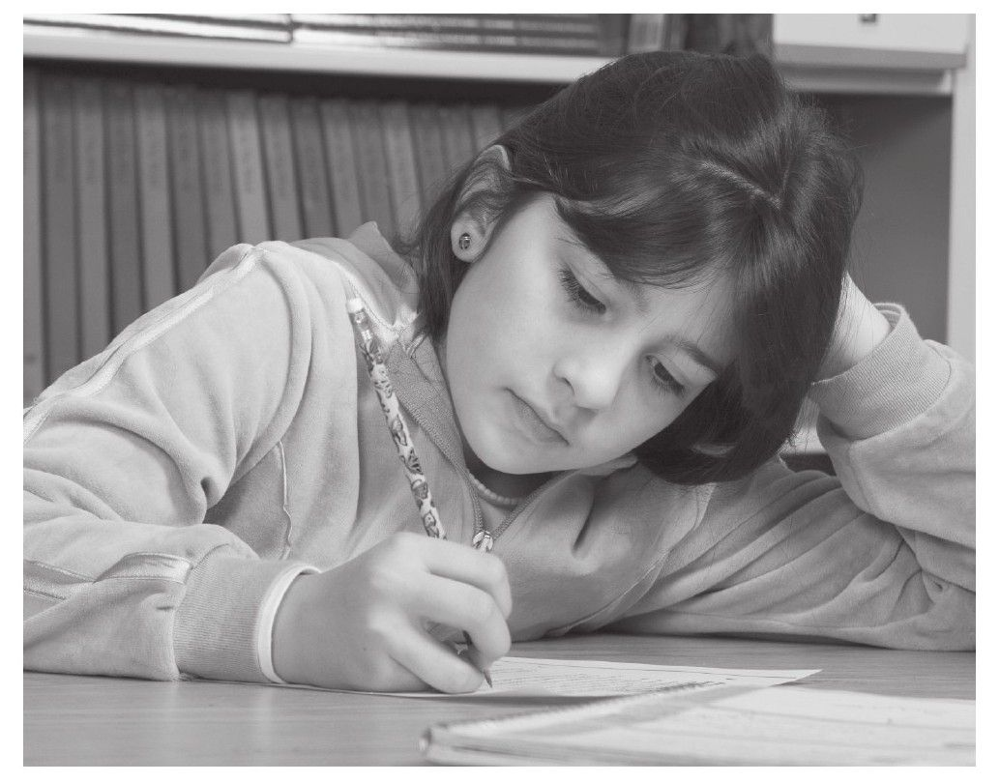
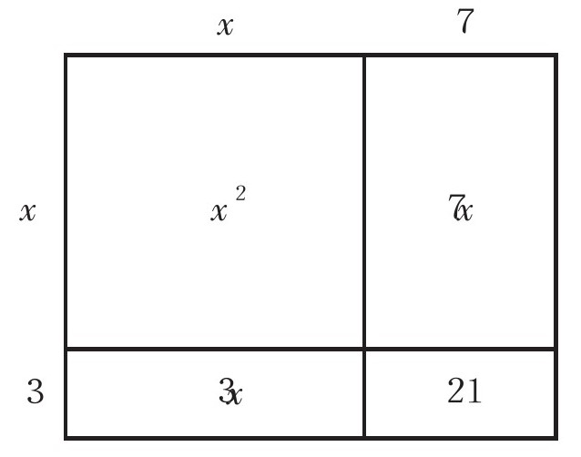

当我在Amber Hill学校开展调研时，Caroline才14岁，那时她非常热爱数学学习，而且极具天赋。当学生们在3年前入学时，都会参加一项数学测试。Caroline在她入学那年是所有学生中考试成绩最高的，但是在经过了3年的学习后，她却成为班级中成绩最低的学生。是什么情况使她的学习成绩急转直下呢？[书籍免费分享微信jnztxy]
当我再次见到Caroline时，她依据个人能力被分在了全年级最优秀的班级上课，这个班的数学由Tim老师负责。Tim老师为人友好，专业水平高，是数学教研办公室的负责人。但是Tim老师采用的是传统数学教育模式，就像许多采用同样教学方法的其他老师一样，他在黑板上写下关于问题证明的推导过程，并期望学生们能够通过不断地动手练习来提升自己的学业水平。
Caroline和其他6名女孩围坐一桌作为学习小组，她们中的每一个人水平都很高，并且想把数学学好。Caroline看起来似乎对这种课堂教学模式并不适应，客观来讲她是个勤奋好学而且善于思考的好学生。每当Tim老师向全班讲解有关数学方法时，她都会像其他女学生一样提出类似这样的问题：为什么这个方法可行？这个方法是怎样被发现的？为什么我们昨天讲到的方法可以用来解答这道题？Caroline一遍又一遍地向Tim老师提出这些问题，但是Tim老师却总是一遍又一遍地就事论事，并没有真正地去回答问题。Caroline逐渐对数学课失去兴趣，没过多久她的成绩便开始下滑。
我曾记得有一次在她们的课堂上讲解的是关于因式分解的内容。现在用一道例题来说明Tim老师的授课方法：
（x+3）（x+7）
学生们需要记住如下的做题步骤：
1.首项相乘（x·x）
2.外项相乘（x·7）
3.内项相乘（3·x）
4.末项相乘（3·7）
将所有项合并整理得到：x2+7x+3x+21=x2+10x+21
最后要求学生按照上面的方法来记忆解题过程。这样的解题过程从数学学习角度来讲对于学生是毫无意义的，因为学生只知道去努力地死记硬背，而往往忽视其真正想要表达的含义。有一天我恰好和Caroline的小组一起上课，看着她正拍着脑袋好像在冥思苦想，便问她是否一切还好。她用痛苦的眼神回望了我并说道：“唉，我讨厌去记这些公式。”又接着说，“你能否告诉我为什么这道题可以这样做吗？为什么必须将所有项相加后才能满足题目要求？”她曾经试图问过Tim老师，而Tim老师仅仅是告诉她这个方法如何去使用并且只需要背下来即可。
我蹲在Caroline课桌的后面，询问她我是否能画一张图来说明这个问题。我边画边解释：我们可以将二项式乘法中的因式看作某个长方形的长和宽。她坐在我旁边看着我继续画着草图：

没过多一会儿，组内的其他女孩也都围坐在我旁边来听我对问题的分析讲解。还没等我把图画完，Caroline就按捺不住地说：“哦，我现在总算是明白了。”其他人也都纷纷表示赞同。其实对于画草图讲解这个事，我的内心不免有些愧疚，因为我在课堂上的角色定位并不适合给学生解答问题，而且我也无意给Tim老师的正常教学带来不必要的干扰。但是只有在这样的情况下才能让我有机会参与到课堂教学当中。虽然画图这个方法看起来很简单，但是意义深刻，因为它让孩子们明白了数学方法的内在原理，而这对于他们来讲十分重要。
在此之后的3年中，我又多次旁听过Tim老师所在班级还有其他班级的数学课程。随着我采访学生数量的增多，我开始注意到在男学生和女学生之间有着这样一点不同：对于女学生来说，不论从数学中学到了什么，她们都去问问为什么这样做。虽然女学生能够从字面意义上记住相关方法并去反复练习，但是她们不仅仅满足于此，她们还想知道这些方法为什么采用这样的套路模式，这样的数学思路源自哪里，各种数学概念之间又有着什么样的内在联系。一些男学生同样也会产生这样的疑问，但是他们中的大多数人更倾向于去接受这些数学方法而不是对此进行深入研究。在我对学生的采访中，女学生通常会表达出这样的想法：“老师只是把概念知识在黑板上写出来，而你需要自主地将其转化为自己的东西。因此难免会产生这样的疑问：‘嗯，这几道题是怎么做出来的？那个题的答案又是怎么得到的？为什么要这样做呢？’”
在我发起的对全学年数学教育评价的调查问卷中，我曾让学生们列举出数学学习的5种方案。91%的女学生都将“对概念的理解认识”放在数学学习的首要位置，而男学生中只有65%的人持有同样观点。这个结果从统计学角度来讲是极具差异性的。其他35%的男学生则认为“数学定理的记忆和背诵”是最重要的。女学生和男学生在课堂上所扮演的角色也有所不同，在我旁听过的大约100堂数学课中，我经常看到男学生疯狂地翻阅着教材上的练习题，他们之间经常搞些做题比赛，看谁能以最快的速度完成更多的题目。我同样也能看见女学生脸上浮现出失望和困扰的表情，她们尽最大努力去理解自己所学习的内容，或者有人就此彻底放弃了数学学习。
在课堂上我会经常让学生们来解释他们到底是在学习什么。在绝大多数情况下，他们都会告诉我所学的章节名称，这时如果我接着问：“的确，你们是在学习这一章没错，但你们具体又在学哪些方面的内容呢？”他们会接着告诉我正在做第几道练习题；但是却没有一位男学生或女学生能告诉我，他们在做题时为什么要采用那些特定的数学方法，或者告诉我这些数学方法的内在原理是什么。
从学生整体来看，只要能把题目解答正确，男学生对于数学方法的核心原理并不怎么关心。而女学生通常也会把题目回答准确，但是她们并不满足于此，而是想要把知识学习得更加深入透彻。
在结束了3年的学习之后，所有学生都参加了全国统一的考试。在这个班级中女学生的成绩要比男学生的成绩低很多，而这种现象普遍存在。Caroline曾经是成绩最为优秀的学生，最后却取得了很低的成绩。在她完成所有课业任务的时候，她早已认为自己不再擅长数学了，尽管她在此前就已经展示出了数学方面的天赋。Caroline和其他的女学生仅仅是想从更为开阔的视角去理解这些数学方法，认清其内在关联，而不只是死记硬背。
无论是男学生还是女学生都不会喜欢Amber Hill学校的这种数学教育方式，因此数学这门课在这所学校并不受到学生的欢迎，但是男学生却能把数学当作一种程式化的“操作流程”来学习，而这恰恰是女学生所排斥的。当她们对所学知识无法达到自己预期需要理解掌握的深度时，她们也就随之对这门课程失去了学习兴趣。
全国教育统计数据直观地反映出女学生在数学方面的成绩非常好，能够和男学生的水平持平甚至是超越他们。也就说明，在对她们如此不利的教学条件下，女学生之所以还能取得不错的成绩，全赖于她们凭借自身的学习能力和积极主动的学习态度。但是女学生取得如此之高的成绩却很容易掩盖一项令人担心的事实：女学生接受的数学教育会让她们感到很不适应，并且使她们在无形之中失去了提出深刻问题的机会，而这正是导致女性无法在数学领域取得更高成就的原因所在。
在Phoenix Park学校，学生们通常面对的是更具延展性、开放性的数学问题。而且在课堂上也鼓励学生提出“为何、如何、怎样”这类的疑问，因而男女学生能够站在同一平台上，在一系列考试中取得比Amber Hill学校学生更为出色的成绩。
很多女学生都向我反映，她们需要了解数学方法的内在逻辑和运作原理，而且她们并不喜欢那种需要死记硬背各种概念的课堂教学模式，就像Kristina和Brsty对我说的：
Kristina接着和我谈起，作为一名年轻有活力的女性，她需要去探索和搞清楚这样一个问题：
对于Kristina来讲，数学这个科目不能让她充分地探索其内在本质特征或者发挥各种各样的联想，真的是非常遗憾，因为这本应是在她这样的年纪去着重培养的特质。
来自以色列教育部门的David Sela和来自耶路撒冷希伯来大学的Anat Zohar，根据学生的性别不同，对物理学教学开展了一次广泛而深入的实践调研。他们参考了我在数学课堂上关于女学生学习情况的一些分析方法来研究女学生在物理课堂上的表现，以观察是否会得出相似的结论。研究人员从数据库中抽取大约400所开设大学物理入门课程的高中，随机抽取50位学生作为参考样本，其中25位男学生和25位女学生。经观察发现，女学生在物理课堂上的表现，与我在数学课堂上发现的情况出奇的一致，她们同样拒绝在没有完全理解相关概念知识的情况下去死记硬背各种知识。她们声称这样的学习方式会把她们逼疯。女学生们想知道那些物理学方法的原理是什么，以及如何在不同领域的方法之间建立起联系。
最后两位专家得出结论：虽然男学生和女学生在物理课上能够相互分享各自对于知识的理解，但是女学生对于知识的渴求要比男学生更加强烈。由此可见在这样的班级学习气氛中，女学生在学业上面所遇到的困惑自然要比男学生多得多。[1]
这些差异性并不意味着所有女学生的思考方式都一样，而所有男学生的思考方式又都是另一个样。事实上，在Sela和Zohar对学生的走访过程中发现，有1/3的男学生同样表现出了对知识深入研究的倾向，试图将所学知识融会贯通。这种由于性别不同而在学习方面产生的差异看起来很有趣，以至于到现在依然是个谜。
女性对于“知晓”这个概念有着与生俱来的独到见解，这一理念因国际知名心理学家及作家卡Carol Gilligan而闻名于世。在Gilligan所著的《不同的声音》一书中，她认为女性在学习时需要把握所学知识的整体连贯性，对事物做出判断时更倾向于凭借自己的直觉、创造力还有个人经验。而男性在学习时不需要这种知识上的连贯性，对事物做出判断时更倾向于凭借逻辑、严谨、基于事实还有理性[2]。Gilligan的论断受到了很多谴责，但同时也得到了许多认可其观点的女性的支持。
在多年以后，一群研究者又将Gilligan的理论发扬光大，并且宣称从更为广义的角度来讲，男性和女性在认知的方式上有着本质的不同。心理学家Mary Belenky, Blthe Clinchy, Nancy Goldberger和Jill Tarule[3]等又把不同性别对于“认知”的理解加以延伸，并进一步证实：男性对于知识的理解记忆是“间断的”，女性对于知识的理解记忆则是“连续的”。不过研究者们并没有足够多的相关方面数据来支持他们对男性和女性思考方式不同这一观点，因此他们也听到了一些强烈的反对之声。
事实上，我的同事也曾对我的调查结论提出过质疑，他们认为在课堂上由老师统一主导的情况下，女学生和男学生不可能在学习方面产生如此大差异。当他们向我询问这种差异产生的根源时，我不得不承认关于这点尚未明确。尽管男性和女性在年龄段早期的日常生活行为中就表现出了极大的不同，但是并没有明显的证据能够证明，他们在数学以及其他学科领域的认知方面存在着明确的差异，而这直至目前才有了重大突破。
进入21世纪以来，在人类大脑研究这项新兴技术领域产生了有趣且重大的突破，这一突破有助于神经学家们绘制人类大脑运转的回路图。作为精神病学专家以及《女性大脑》这本书的作者，Louann Brizendine指出脑部成像技术可以证明：由于大脑的排列结构、化学成分、遗传基因、荷尔蒙分泌还有其他机能的差异，造就了男性和女性思考方式的不同。[4]研究人员发现男性和女性在思考问题时使用的是大脑的不同区域，即便他们在考试中取得了同样的分数。比如说，在对男性和女性想象三维旋转物体的实验研究中，所有的实验参与者都对此很擅长，但是女性和男性实验参与者所使用的是完全不一样的大脑回路[5]。
物理学家Leonard Sax在其著作《家长与老师应该从性别科学差异性中去注意什么》一书中也谈到了由于性别不同所产生的脑部差异。Sax认为女性和男性的听力水平存在差异（他在书中通过例证说明了女性听力要比男性更加优秀），而且女性和男性的兴趣指向以及学习方式都不尽相同。Sax关于女学生和男学生学习方式不同的这一论断，部分证据来源于对脑部成像研究的结果，并且他认为男性和女性的大脑具有同样的活跃性，但是因其构造不同而会擅长不同类型的工作任务。
Sax的结论是，女性往往在学习过程中更倾向于相互交流，并以建立不同事物之间的联系作为侧重点，同时也指出了女学生和男学生在学习数学以及其他学科时应该采取不同的学习方法。Brizendine则认为，女学生排斥数学学习是因为她们无法从中获得与其他人更多交流和互动的机会。当年轻人在做自己的职业规划时，由于大脑血液中睾丸酮激素的作用，男学生更加倾向于去选择独立性更强的工作，而与此同时，女学生在选择工作时更倾向于那些能与人多交流沟通的工作类型。女学生的这种择业观恰好与数学教育的讲课模式相背离，但是我们知道讲课方式并非只有一种。当我在采访AP微积分课堂上的学生时，那里的女学生就可以相互交流，这恰好能与她们倾向于交流、加深对知识理解的天性相吻合。正如即将进入数学专业学习的Veena所说：
当学生有机会在课堂上相互交流思想时，那么也就在无形中为他们铺垫了一条理解数学并发现其内在奥秘的捷径，这对于男女学生来说都是一种不错的方法。有些男学生可能更希望去独立地思考问题，但是这种方法并不适用于其他学生对于数学的学习与理解，也就是说这种方法不具有普遍性。不仅如此，在高精尖的数学、科学以及工程学领域所需要的不是那些抽象独立的概念定义，最关键的是需要建立起以思想沟通、相互合作为基础的工作模式。
Sax将大脑不同区域对数学学习起到的影响进行了逐一概括，但是这些结论目前还未得到教育实践的证实。他认为，当女学生在进行数学学习时，她们所调用的大脑皮层通常都具有语言调节以及高级认知的功能，而男学生则使用的是海马体，“海马体是脑部控制神经系统的最原始区域，是进行各种神经回路感知的触发点”[6]。
Sax非常明确地指出，女学生在学习数学时需要调用更为高级的大脑认知功能，需要把数学知识与具体现实世界的生活相关联，而男学生在学习数学时仅仅通过一些原始概念认知就可以了，不需要结合实际具体内容。他用斐波那契数列举了个例子：男学生只需要结合给出的具体数字，就可以自行探索其内在的变化规律，而女学生则需要以现实世界中所存在的客观事物作为媒介来将问题引入，比如洋百合、向日葵、松果等。女学生在学习过程中会提出如下的问题：“为什么飞叶草的花瓣数量符合斐波那契数列？”“这些数字规律又如何来解释这些自然现象呢？”
Sax关于对女学生爱提问的论断可以说是正确的，但是关于女学生需要结合现实生活来学习数学的论断却是错误的。实际情况是：如果女学生能够理解数列潜在规律的话，她们会很愿意和这些数字打交道，而男学生也很愿意结合现实生活中的实例来思考数学知识。
其实数学教育最好的方法就是将抽象理论和现实生活相结合。Sax给出的教学建议是，将所有男学生集中在一起，让他们去学习那些晦涩难懂且看似毫无关联的数学知识；将所有女学生集中到一起，去学习那些有着明显关联的数学概念知识。事实上，即使女学生能够通过理论与实际相结合的方式把数学学好，但是仅以这种方式能够开展的数学课程实在是少之又少。要使女学生对这些数字产生兴趣，关键并不在于将数学知识与具体的实际生活相结合，而是要让她们去理解数学概念间的相互联系，并且给予充分自由的空间，让她们讨论关于数学学习的任何问题。
除此之外，大脑结构的差异性并不是决定将男女学生分开教学的根本原因。也有不少男学生在学习数学时，热衷于理解概念间的联系并愿意组织讨论，甚至其中有些人因为无法按照这种方式学习而放弃了数学这门学科；况且也有部分女学生愿意独自学习那些抽象难懂的数学知识。很遗憾的是，这些孩子不得不去接受与自己的期望相背离的学习方式，即要么完全抽象，要么现实。如果数学教育能够更多地给予大家讨论学习的机会，改善学生对加深知识理解的途径，在不同的数学分支领域建立起联系，那么很显然所有学生都会受益。这种多元化的教学模式会有助于数学老师讲课更为透彻。
关于对人类大脑的研究目前还处于萌芽时期，但是为何女性群体对于知识深入学习需求如此强烈这一问题，并没有我们应该如何为她们提供一个合适的教育环境来得重要。
但是让我们感到惊讶的是，在这种并非理想的教学环境下，女学生依然能够很好地应对数学学习，甚至可以把数学学得很好。比如在2002年和2004年，从事数学专业学习的女性比例竟然达到了47%，通过AP微积分课程考试的比例达到了48%。这些统计数据会使人感到惊讶，是因为民众存在着一种共识：男学生在数学学习方面的表现要优于女学生。但事实显然不是这样，男女学生的成绩差异依旧非常微弱[7]，说明不了任何实质性的问题。但就是这种极其微弱的差异却被有些媒体不断放大，从而使不知情的民众对这一理念完全接受。
在美国的多次大型数学考试中，也未有过关于性别差异对成绩造成影响相关方面的记录。只有SAT[8]考试和AP考试产生过一些细微差异：在2002年的平均考试成绩中，女学生的平均分是3.3，男学生的平均分是3.5。在具有相似考试模式的英国和美国，曾有过女学生的考试成绩低于男学生的现象，但就目前来讲她们在所有考试科目中都取得了非常优异的成绩。实际上，女学生和男学生在这几年的考试成绩上发生了一种有趣的转变。在英国，所有学生在16岁时几乎都要参加大学先修班证书（GCSE）的数学考试[9]。参加这项考试的男女学生人数大致相同。在20世纪70年代，有很多男学生可以轻松通过GCSE考试并且取得不错的成绩；在20世纪90年代，女学生通过考试的人数开始和男学生持平，但是男学生依旧可以取得更高的考试分数[10]。现在的英国，女学生在所有课程中的表现都要比男学生更加出色，其中就涉及数学和物理科目。
目前，包括美国、英国在内的许多国家的女学生学习成绩都非常不错，但是她们出色的成绩却掩盖了一个事实，那就是大多数的数学课堂上都存在着教学不公平的现象，正是这种数学教育环境的恶化导致不论是男学生还是女学生，他们中有许多人最终都放弃了对这门学科的学习。
然而，缺少对知识深入探索的机会不仅仅是阻碍女性学习数学和相关科学的唯一屏障。与20年前相比，目前学校的数学课堂上对性别歧视的固有观念会减弱很多。当“性别歧视者”这一概念开始在教材中出现并流行起来时，很多老师才注意到自己可能给予男学生过多的关注、帮扶还有积极反馈[11]，而对女学生的关注度相对低一些。但是在某些课堂上依旧未抛弃那些陈旧的教学观点和教育模式，这就导致了女学生失去了对数学学习的兴趣并且课堂参与度不断下滑。还有一些学校的数学课及其他理科课程由于竞争过于激烈使女学生望而却步。
在大学数学系的情况更为糟糕。美国纽约奥尔巴尼州立大学教授Abbe Herzig就指出，在大学的数学系，女学生还有少数民族[12]学生会遭到冷遇。女大学生将会面临包含性别歧视、能力偏见、孤独寂寞还有缺乏担任重要角色机会等多种问题的困扰[13]，而且这种情况在研究生阶段更为显著。总体而言，美国高校的数学系依然保持着男性的优势地位，而在研究生中女性被边缘化的情况，就如同在教工中女性地位被边缘化一样。斯坦福大学数学系曾经没有专供女性教师使用的卫生间，校方仅仅是在几个男卫生间门上标识出“wo”（英文中代表女性的前缀）来加以区分，并在小便池边摆放几盆花来提示人们这是女性卫生间，这种情况一直在持续。
以上的这些情况又能为从事数学教育的女性同仁传递出什么样的信息呢？现在我已经很难判断在数学的历史长河中缺少了女性的存在或是缺乏对她们的足够关注将会是个什么样子。
数学系的教学大纲仍然是基于那些条条框框的约束，这又一次阻碍了女学生对于问题的求索机会，就像Julie一样，她放弃了在剑桥大学攻读数学学位的机会，对此她向我解释道：
对于Julie来讲，由于她在数学考试中取得的出色成绩使她获得了去剑桥大学深造的机会，但由于她不能搞明白这些数学方法的来龙去脉并由此产生了极大困扰，而不得不使放弃了这个机会。
除了在教育机构存在上述现象外，我们的年轻人还同时受到了社会上长期存在的陈规陋习影响，尤其以媒体的影响最为显著。诸如“女孩子由于在学习中得到了太多的照顾和培养而缺乏在科研领域吃苦的精神”这样的说法，就使人们产生对女性不适合从事数学及科学领域相关工作等错误判断。女性并不需要“简化版”的数学教育。事实上，女性这种对数学学习的求索方式正是真正数学工作核心内容的集中体现，因为在对问题的探索过程中，需要证明过程和严谨的数学思想作为支撑。
在英国，当女学生在数学以及其他学科的成绩全面赶超了男学生之后，这对于社会大众来讲是一次空前的警报。政府部门立即做出反应，投入资金来研究数学及其他学科成绩与性别之间是否存在着某种联系，而这种情况在女学生成绩低于男学生时却从来没有发生过。有趣的是，人们通常想当然地认为，女学生在数学等理科方面的成绩较低主要归因于她们的智力因素，而当男学生的成绩出现下滑时，人们就开始寻找另外的一些原因了：比如教材的内容是否跑偏，教学方法是否更适合于女学生，或者老师是否把太多的精力放在了鼓励女学生的学习上面。却并没有人对男学生的大脑是否适合学习数学及相关理科课程产生过怀疑。
关于人们对女学生数学成绩不好的固有观念，历史学家Michele Cohen有着一番独到的见解。她认为这是一种历史遗留问题。在17世纪，针对女性还有工人阶级家庭出身的学生数学成绩低的现象，有许多学者曾绞尽脑汁地做出了各种诡辩，而对于男学生，尤其是上层社会的男学生，他们被想当然地认为拥有着更高的智慧。
在那一时期人们始终将人类语言作为女性头脑能力弱的有力证明，英国的绅士们平时少言寡语或不善言辞正是他们思想深邃且内心强大的充分体现。而与之相对的是，这些人认为女性所展现出的成熟交流技巧正好可以作为掩盖其内心脆弱以及其他方面弱点的证据[14]。在1897年，来自英国教会的John Bennett牧师认为，男学生表现出来的学习缓慢和迟钝，是因为他们总会被别人认为有思想、有深度，事实上只是“徒有其表，名不副实”罢了[15]。
为成绩较差的女学生投入更多教育资源的改革趋势，以及女性接受的教育不够充分等观点的形成，都要归因于心理学中关于性别的调查研究。在我对高中生的采访调查中，我经常会感受到男女学生思想潜意识中的那些陈规陋习。尤其让我困扰的是，我发现这些关于女性只适合学习低等数学的言论是来自某些调研报告的结论。最近一次在加州对高中生进行采访的时候，我分别询问了Kristina和Brsty关于对性别差异的理解：
这位女孩引用了一个电视栏目播出的调查结果，来说明女学生和男学生在数学学习方面表现出的差异性。问题是我们质疑一些研究结果的公正性，并不在于当事人声称女学生的成绩要比男学生的成绩差，抑或是指出女学生在面对数学课堂教学时缺少自信心，而是他们把在调查中观测到的现象直接归咎于女性的天生特质而不是其他的外部原因。而这直接导致教育者们推行了一系列本来是出于善意但实质上却将女学生作为教学重点目标的改革建议。
在20世纪80年代教育部门曾推行了大量的改革计划，目的是让女学生对数学学习更有信心且更具挑战精神[16]。当然这一系列教育改革背后的初衷是好的，但是改革者们应该为女学生被迫接受的教育转变而不是数学教育环境或社会教育制度的革新转变负责。
在1989年7月5日，《时代周刊》曾头版刊登《数学不会说谎：男性比女性做得更好》来论述性别不同对于SAT分数的影响情况，但是这篇文章同其他媒体报道一样，只是去单一地将女性在数学方面不尽如人意的表现归结为差异原因，而不是去质疑课堂的教学和学习环境。媒体是造成目前学习环境不公正的推手之一，并最终对女性的数学学习产生消极影响。既然女性在社会很多领域都可以有所建树，那么我们为什么没有看到有任何媒体以大标题来赞扬女性在其他领域所表现出的惊人天赋呢？
曾有这样一句动听且颇有韵律的歌词来形容女性是“糖与香料还有其他一些美味食材的精华”。女性只有甜美动人的外表而缺少学习数学及其他课程的那种缜密性的思维，这样的论断依旧还能够时不时听到。现在是时候去消灭这些错误论断了，并且应该鼓励女孩子们学习数学还有其他的课程。这不仅是为了她们的未来发展，也为了锻炼她们的学习能力。学习数学需要追根溯源，在数学概念间建立起相互联系，需要培养严谨性的思维。女性的天生特性其实更加适合学习更高级、更专业的数学知识。让数学领域不断流失大量人才的重要原因就是，数学这门学科的学习被大众舆论误导，另外就是美国糟糕的数学教学方法。